INTRODUCTION - PETROL FUEL INJECTION SYSTEM
- Path
- Descriptions > 10 ENGINE > 1056 PETROL INJECTION SYSTEM > INTRODUCTION - PETROL FUEL INJECTION SYSTEM
- Kind
- system description
- Applies to
- engines: 1.4 8v; all production periods
- Interactive page
- https://sloeber94.github.io/elrnDB-fDbl/en/#/223000214
Applies to: engines: 1.4 8v; all production periods
SPECIFICATIONS
The Marelli IAW 5SF3 system belongs the category of systems integrated with:
- inductive discharge, digital, electronic ignition
- sequential, phased type electronic injection (1-3-4-2).
The system in general is illustrated in the diagram.
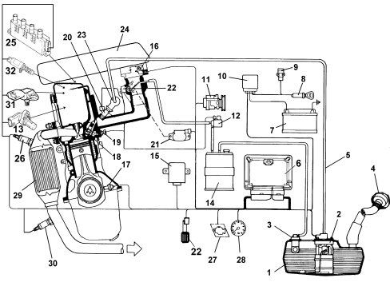
1. Fuel tank
2. Fuel pump
3. Multifunction valve
4. Safety valve
5. Fuel supply pipe
6. Injection/ignition electronic control unit
7. Battery
8. Ignition switch
9. Inertia switch
10. Engine compartment junction unit
11. Climate control system
12. Fuel vapour cut out solenoid valve
13. Timing sensor
14. Activated charcoal filter
15. Body Computer (diagnostic socket and Fiat CODE signal)
16. Temperature/absolute pressure sensor
17. Rpm and TDC sensor
18. Spark plugs
19. Coolant temperature sensor
20. Injectors
21. Throttle control actuator and throttle position sensor
22. Accelerator pedal potentiometer
23. Fuel supply manifold
24. Air filter
25. Ignition coils
26. Lambda sensor (upstream)
27. System failure warning light
28. Rev counter
29. Catalytic converter
30. Lambda sensor (downstream)
31. Atmospheric pressure sensor (1.4 8v version only)
32. Phase transformer pilot solenoid valve (1.4 8v version only)
OPERATION OF THE INJECTION-IGNITION SYSTEM
Main functions
In idling conditions, the control unit controls the following to maintain the smooth running of the engine even when environmental and applied load parameters change:
- the moment of ignition
- the air flow rate.
The control unit controls and manages injection so that stoichiometric air/fuel ratio is always within optimum limits.
The system functions are essentially as follows:
- system self-adaptation
- self-diagnostics
- Fiat CODE recognition
- cold starting check control
- control of combustion - Lambda sensor
- detonation control
- check on enrichment during acceleration
- fuel cut-off during deceleration
- fuel vapour recovery
- restriction of maximum rpm
- fuel supply - electric fuel pump check
- connection with climate control system
- cylinder position recognition
- injection time adjustment
- ignition advance adjustment
- control and management of idle speed
- control of cooling fan
- phase transformer control (1.4 8v version only)
- vehicle speed control (Cruise Control)
- starter motor control.
Injection system
The essential conditions to be met by the air-fuel mixture for efficient operation of engines with controlled ignition systems are mainly as follows:
- the metering (air/fuel ratio) must be kept as close as possible to stoichiometric value to ensure that combustion is as fast as possible avoiding fuel wastage;
- the homogeneity of the mixture, consisting of petrol vapours distributed throughout the air as finely and uniformly as possible.
The injection/ignition system uses a measuring system known as "SPEED DENSITY-LAMBDA".
In other words, angular rotation speed, density of the intake air and control of the mixture strength.
In practice, the system uses the ENGINE SPEED data (rpm) and the AIR DENSITY (pressure and temperature) to measure the quantity of air drawn in by the engine.
The quantity of air drawn in by each cylinder, for every engine cycle, also depends on the unit capacity and the volumetric efficiency as well as on the density of the intake air.
The density of the air refers to the air drawn in by the engine and calculated according to the absolute pressure and temperature, both measured in the intake manifold.
The volumetric efficiency is the parameter relating to the filling coefficient for the cylinders measured on the basis of experiments conducted on the engine for the entire operating range and then stored in the electronic control unit memory.
Having established the quantity of intake air, the system must provide the amount of fuel depending on the desired mixture strength.
The end of injection impulse or supply timing is stored in a map in the control unit memory and varies according to the engine speed and the pressure in the intake manifold.
In practice, it involves processing carried out by the electronic control unit to control the sequential and timed opening of the four injectors, one per cylinder, for the length of time strictly necessary to produce the air/petrol mixture as close as possible to the stoichiometric ratio.
The fuel is injected directly into the manifold near the inlet valves at a pressure of around 3.5 bar.
Whilst the speed (rpm) and the density of the air (pressure and temperature) are used for measuring the quantity of intake air which, when established, is used for metering the quantity of fuel depending on the desired mixture strength, the other sensors in the system (coolant temperature, throttle valve position, battery voltage) allow the control unit to correct the basic strategy for all engine operating conditions.
It is vital for the air/fuel ratio to be close to the stoichiometric value for the correct and prolonged operation of the catalytic silencer and for reducing pollutant emissions.
Ignition system
The ignition circuit is the static, inductive discharge type, i.e. without a HT distributor, with power modules located inside the injection -ignition control unit.
The system includes two high tension double outlet coils in a single container connected directly to the spark plugs.
The primary winding for each coil is connected to the power relay (thereby receiving the battery voltage supply) and to the pins of the electronic control unit for earthing.
After the starting stage, the electronic unit manages the basic advance taken from a special map in accordance with:
- engine rpm
- absolute pressure value (mbar) measured in the intake manifold.
This advance value is corrected depending on the temperature of the engine coolant and the intake air.
The spark plugs for the cylinders are each connected, by means of a high tension lead, to the secondary winding terminals of each respective coil.
This solution is also known as the "single spark" because the energy accumulated by the coil is discharged almost exclusively at the corresponding spark plug electrodes in the cylinder in compression allowing the ignition of the mixture.
The coils are housed in a single casing located on the tappet cover.
Diagram showing information entering/leaving the control unit
The fuel level and vehicle speed information reaches the control unit via the CAN line. The information relating to the robotized gearbox (where fitted) reaches the injection control unit via the high speed CAN line.
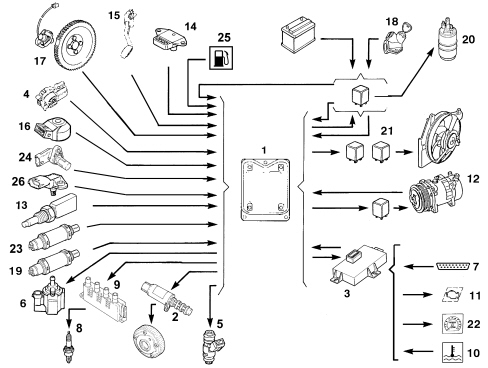
1. Electronic control unit
2. Phase transformer pilot solenoid valve (1.4 8v version only)
3. Body Computer (with Fiat CODE control unit incorporated)
4. Throttle control actuator and throttle position sensor
5. Injectors
6. Fuel vapour solenoid valve
7. Diagnostic socket
8. Spark plugs
9. Ignition coils
10. Engine coolant overheating warning light
11. Injection failure warning light
12. Climate control system
13. Engine coolant temperature sensor
14. Intake air temperature and pressure sensor
15. Accelerator pedal sensor
16. Detonation sensor
17. Rpm and TDC sensor
18. Ignition switch
19. Lambda sensor upstream of the catalytic converter
20. Fuel pump
21. Radiator fan high and low speed relays
22. Speedometer/milometer
23. Lambda sensor downstream of the catalytic converter
24. Timing sensor
25. Fuel level sensor
26. Atmospheric pressure sensor (1.4 8v version only)
OPERATING LOGICS
System self-adjustment
The control unit is equipped with a self-adjustment function that is designed to recognize the changes that take place in the engine due to the processes of bedding in and ageing of both the components and the engine itself in time.
These changes are memorized in the form of modifications to the basic map and are designed to adapt the operation of the system to the gradual alterations in the engine and the components compared with when they were new.
This self-adjustment function also makes it possible to compensate for the inevitable differences in any replacement components (due to production tolerances).
The control unit modifies the basic map in relation to engine specifications when new on the basis of an exhaust gas analysis.
The self-adjustment parameters are not deleted if the battery is disconnected.
Autodiagnosis and recovery
The control unit auto-diagnostic system checks that the system is working properly and signals any irregularities by means of an MIL warning light in the instrument panel with a standardized ideogram and colour laid down by European regulations.
This warning light indicates engine management faults and also faults detected by EOBD diagnostic strategies.
The MIL warning light operating (mil) strategy is as follows:
with the ignition on, the warning light comes on and remains on until the engine has been started up.
The control unit self-diagnostic system checks the signals coming from the sensors comparing them with the permitted limits.
Fault indication during start up:
the failure of the warning light to go out when the engine has been started indicates that there is an error memorized in the control unit.
Fault indication during operation:
- the warning light comes on in flashing mode to indicate possible catalytic converter damage due to misfiring.
- the warning light comes on in constant mode to indicate the presence of engine management or EOBD diagnostic errors.
From time to time the control unit defines the type of recovery according to the components that are faulty.
The recovery parameters are managed by components that are not faulty.
Fiat code recognition
The moment the control unit receives the ignition ON signal it converses with the Body Computer (Fiat CODE function) to obtain the go ahead for starting.
The communication takes place via the CAN line that connects the two control units.
Recognition of cylinder position
The engine timing sensor, together with the engine rpm and top dead centre (TDC) signal, allows the control unit to recognise cylinder sequence when implementing phased injection.
This signal is produced by a Hall effect sensor.
Combustion - lambda sensor check
In EOBD systems the Lambda sensors, all the same type but not interchangeable, are positioned one before and one after the catalytzer. The sensor upstream of the catalyzer determines the control of the mixture strength known as the 1st closed loop.
The sensor downstream of the catalyzer is used for the fault diagnosis of the catalyzer and for modulating the 1st loop control parameters.
The second loop is therefore adaptive to make up for production discrepancies and slight drift that the response of the sensor upstream of the catalyzer could experience due to ageing and contamination.
This control is known as 2nd loop control (closed loop).
Operation when cold
In these conditions there is a natural weakening of the mixture as a result of the poor turbulence of the particles of fuel at low temperature, reduced evaporation and strong condensation on the internal walls of the intake manifold, all of which is exacerbated by the increased viscosity of the lubricant oil which, as is known, increases the rolling resistance of the engine mechanical components at low temperatures.
The electronic control unit recognizes this condition on the basis of the coolant temperature signal, increasing the basic injection time.
Whilst the engine is warming up, the electronic control unit also operates the stepping motor which determines the quantity of air required to ensure that the engine does not cut out.
Operation in full load conditions
The full load condition is detected by the control unit by means of the throttle position and absolute pressure values.
In full load conditions the basic injection time must be increased to create the maximum power supply produced by the engine.
Operation in deceleration
The engine has two overlapping strategies during this stage:
- A negative transition strategy to maintain the quantity of fuel supplied to the engine at the stoichiometric value (less pollution); this stage is recognized by the control unit when the throttle potentiometer signal voltage value goes from a high value to a lower one.
- A soft accompaniment strategy at low speed (dash-pot) to dampen the variation in torque supplied (reduced engine braking).
Atmospheric correction
Atmospheric pressure varies according to altitude causing a variation in volumetric efficiency such that requires a correction in the basic mixture strength (injection time).
The correction of the injection time depends on the variation in altitude and will be automatically updated by the electronic control unit each time the engine is switched off and in certain throttle position and rpm conditions (typically at low engine speeds with the throttle wide open) (dynamic adjustment of atmospheric correction).
Cut-off operation
The fuel cut-off strategy is implemented when the control unit recognizes the accelerator released position: pedal percentage = 0% and the engine speed exceeds around 1350 rpm (the value is a guide and varies on the basis of certain parameters, including mainly temperature and gear).
The control unit only enables the cut-off when the engine temperature exceeds 0 °C.
Recognition that the accelerator pedal is not released or the engine speed is below 1270 rpm (variable guide value for various models) re-enables the engine supply.
The cut-off is implemented at very high speeds even if the throttle valve is not completely closed but the pressure in the intake manifold is particularly low (partial cut-off).
Operation in acceleration
In this stage the control unit increases the amount of fuel requested by the engine (to produce the maximum torque) depending on the signals coming from the following components:
- throttle potentiometer;
- rpm and T.D.C. sensor
The basic injection time is multiplied by a coefficient depending on the temperature of the engine coolant, the opening speed of the accelerator throttle and the increase in pressure in the intake manifold.
If the sharp variation in the injection time is calculated when the injector is already closed, the control unit reopens the injector (extra pulse) in order to be able to adjust the mixture strength as quickly as possible; the subsequent injections are already increased on the basis of the coefficients mentioned previously.
Protection beyond revs
When the engine speed exceeds the figure of 6350 rpm set by the manufacturer, the engine itself finds itself in "critical" operating conditions.
When the electronic control unit recognizes that this speed has been exceeded it inhibits the operation of the injectors.
When the rotation speed returns to a non critical value (6500 rpm), operation is restored.
Electric fuel pump operation
The fuel pump is controlled by the engine management control unit via a relay.
The pump is stopped:
- if the engine goes below about 40 rpm
- after a certain time (about 3 seconds) with the key in the ON position without the engine being started up (timed enablement)
- if the inertia switch has gone off.
Injector control
The injector control is phased sequential type.
However, all the injectors are operated once in parallel during starting (full-group).
The injector timing varies according to the engine speed and the intake air pressure in order to improve the cylinder filling with benefits in terms of consumption, driveability and pollution.
Knock control
This strategy detects the presence of detonation (engine knock) by processing a signal from the appropriate sensor.
The strategy continuously compares a signal from the sensor with a threshold which is in turn continually updated to take into account background noise and engine ageing.
If the system detects the presence of knock, the strategy reduces the ignition advance until the effect disappears. The advance is then gradually restored to the baseline value or until the effect begins to arise again.
In particular, the advance increases are implemented gradually, whilst the reductions are implemented immediately.
In acceleration conditions, the strategy uses a higher threshold to take into account the increased noise of the engine in these circumstances.
The strategy also has a self adapation function which memorizes (not permanently) advance reductions that are constantly repeated in order to adapt the advance to the different conditions in which the engine finds itself (e.g. the use of fuel with a low octane rating).
The strategy is capable of restoring the advance to the value memorized if the conditions that determined the reduction no longer exist.
Radiator fan management
The control unit directly controls the operation of the radiator fan depending on the temperature of the engine coolant and the engagement of the climate control system.
The fan switches on when the tempreature exceeds 95 °C (1st speed) and 105 °C (2nd speed).
Switching off takes place with a hysteresis of 3 °C below the engagement level (variable guide figures for the various models based on experimental tests).
The high and low speed functions are managed by the intervention of specific relays located on the climate control system control unit and operated by the injection control unit.
Engine idle control management
The control unit detects idling status when the accelerator pedal is released. - To control the idle speed, depending on the consumers switched on and the brake/clutch pedal signals, the control unit controls the position of the motorized throttle.
The idle speed when warm is 750 ± 50 rpm
Warming up stage
The rpm is corrected mainly depending on the temperature of the engine coolant.
When the optimum temperature is reached, the management of the idle only depends on the signal coming from the engine rpm sensor; when external loads are applied, the control unit controls the throttle control actuator to adjust the engine rpm to the conditions and manage the engine load supporting idling.
Management of fuel vapour recirculation
The strategy controls the position of the vapour cut out solenoid valve as follows:
- during starting the solenoid valve remains closed preventing the fuel vapours from enriching the mixture excessively; this condition persists until the engine coolant reaches 65 °C;
- when the engine has warmed up the electronic control unit sends the solenoid valve a square wave signal (duty-cycle) and the opening is modulated.
In this way the control unit controls the quantity of fuel vapours sent to the intake, preventing considerable variations in the mixture strength.
In order to improve engine operation, the solenoid valve operation is inhibited, maintaining the same closure position in the operating conditions listed below:
- throttle valve is closed position
- speed below 1500 rpm
- intake manifold pressure below a limit calculated by the control unit depending on the rpm.
Climate control system management
The injection/ignition control unit is connected to the climate control system:
- it receives the compressor engagement request and carries out the various interventions (additional air);
- it gives the go ahead to switch on the compressor when the strategy conditions are verified;
- it receives information relating to the four stage pressure switch and carries out the various interventions (radiator fan operation).
If the engine is idling, the control unit increases the opening of the throttle and the air flow rate in advance of the engagement of the compressor and conversely restores the throttle to the normal position with a delay after the compressor has been switched off.
The control unit automatically disconnects the compressor:
- when the engine coolant temperature is above 120 °C
- at engine speeds below 650 rpm
The compressor is automatically switched on again when the engine speed increases again to 750 rpm
The control unit switches off the compressor temporarily (for a few seconds):
- in high engine power request conditions (strong acceleration)
- at engine take off.
Management of the phase transformer
The phase transformer is managed entirely by the engine management control unit which:
- detects the camshaft position via the timing sensor
- alters this position according to the engine operation on the basis of a calibrated map
- keeps the camshaft position under control.
The control unit controls the phase transformer pilot solenoid valve in duty-cycle operation.
Starter motor control
The starter motor is not controlled directly by the ignition switch, but is controlled by the injection control unit which activates the starter relay.
The body computer detects the key in the AVV (starting) position and sends the injection control unit a starter motor activation message via the CAN line.
The injection control unit receives this message and, if certain safety conditions are verified, it activates starting.
Control of the vehicle speed (on versions equipped with cruise control)
The Cruise Control is a control unit function that allows the cruising speed of the vehicle to be regulated.
The device is switched on using a button known as the On/Off Switch which can assume the following two stable positions:
- Off, device switched off;
- On, cruise control activated.
The activation of the cruise control is subordinate to the essential conditions for the correct operation of the function.
The Cruise Control console has another two buttons: Set+/Set- (three position, monostable) and Resume (two position, monostable). The Set+/Set- button is used to set the desired speed value, whilst the Resume button allows the speed set before a temporary interruption to be restored.
After having turned the On/off Switch on, the first time the Set+/Set- button is operated activates the device at a speed equal to the current speed of the vehicle.
The speed value can later be reset by operating the Set+/Set- buttons further. Placing the button in the Set+ position (Set-) increases (decreases) the speed value with a corresponding variation in the speed of the vehicle.
Pressing the button briefly causes a single increase or decrease in the speed value, whilst pressing it continuously causes a gradual variation in the vehicle speed at the end of which the adjustment action of the speed reached will be resumed.
If the brake or clutch pedal is operated, the Cruise Control will be temporarily suspended, maintaining the reference speed at the time. Operating the Resume button will reactivate the function at the speed value memorized.
Each time the Cruise Control is deactivated by turning the On/Off switch to the Off position or following the disappearance of an essential condition for its correct operation, the device loses the reference speed stored it in its memory.
In the case of the IAW 5SF3 system the Set+, Set- and Resume controls reach the Body Computer which transmits them to the injection control unit via the CAN.
RECOVERY LOGICS
Air temperature sensor
If the error is present during starting:
- it assumes a value of 50 °C;
- the mixture strength self-adjustment is inhibited.
If the error is present in other conditions:
- the last valid value is memorized and updated depending on the coolant temperature.
Detonation sensor
If this sensor is faulty, the engine management control unit implements the most conservative ignition advance maps to safeguard the engine.
Pressure sensor
If the error is present during starting, a value of 1024 mbar is used.
During operation the value is calculated on the basis of the parameters supplied by the throttle position and rpm sensors.
The mixture strength self-adjustment is inhibited.
Throttle valve position sensor
If there is a fault, the value set is calculated from the readings from the absolute pressure sensor and, if the latter is faulty, the fixed value set is a throttle opening of 50°.
The idle self-adjustment dash-pot and mixture strength strategies are halted.
Coolant temperature sensor
If there is a fault, the injection control unit inhibits the mixture strength self-adjustment and idling.
It sets the last temperature value measured; if it does not correspond to the operating temperature, the injection control unit increases it gradually depending on the time since the engine has been started until 80 °C is reached.
The radiator cooling fan is activated.
Atmospheric pressure sensor
If there is a sensor failure, the value in the intake manifold at the key on or in full load conditions (throttle completely open) is considered as the atmospheric pressure value.
Phase transformer (1.4 8v version only)
If the phase transformer is stuck in one position (maximum advance, maximum delay or intermediate position) through a mechanical fault in the transformer or a short circuit of the transformer pilot solenoid valve, the solenoid valve is no longer operated by the injection control unit.
If the transformer is slow, the injection control unit operates the solenoid valvel to keep the transformer in the maximum advance position (rest position).
IAW 5SF3 INJECTION/IGNITION CONTROL UNIT
General specifications
The control unit is fitted in the engine compartment on the engine and is capable of withstanding high temperatures.
It is a digital type unit with a microprocessor featuring a high calculation capacity and is accurate, reliable, versatile, with low energy consumption and is maintenance-free.
The task of the electronic unit is to process the signals coming from the various sensors through the application of software algorithms and to control the operation of the actuators (in particular the injectors, ignition coils and motorized throttle) in order to ensure the best possible operation of the engine.
The adoption of the Fiat CODE means that control units cannot be swapped between vehicles.
Pin out
The diagram below shows the electronic control unit pin out.
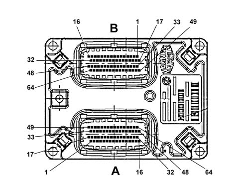
(A) CONNECTOR FOR VEHICLE SIDE WIRING
1. Battery direct + 12 V
2. Accelerator pedal sensor power supply 1
3. Accelerator pedal 2 sensor / air conditioning linear pressure switch power supply
4. Not connected
5. Air conditioning linear pressure switch signal
6. Not connected
7. Not connected
8. Not connected
9. Not connected
10. Not connected
11. Not connected
12. Not connected
13. Not connected
14. Not connected
15. Accelerator pedal sensor earth / air conditioning linear pressure switch
16. Key - On and ignition-controlled power supply
17. Main relay control
18. Not connected
19. Alternator D+ signal
20. Not connected
21. Not connected
22. Not connected
23. Not connected
24. Not connected
25. Not connected
26. Reversing switch
27. Not connected
28. Not connected
29. Not connected
30. Not connected
31. Not connected
32. Not connected
33. Not connected
34. Not connected
35. Not connected
36. Not connected
37. Not connected
38. Not connected
39. Not connected
40. Starter motor relay
41. Not connected
42. Not connected
43. Not connected
44. Not connected
45. Potentiometer earth - accelerator pedal 1
46. Not connected
47. Not connected
48. Not connected
49. Low speed C - CAN line
50. High speed C - CAN line
51. Potentiometer signal - accelerator pedal 1
52. NO brake switch signal
53. Not connected
54. Not connected
55. Minimum oil pressure signal
56. Fuel pump relay
57. Not connected
58. Not connected
59. High speed fan engagement relay
60. Not connected
61. Not connected
62. Air conditioning engagement relay
63. Air conditioning engagement relay
64. Injection system failure bulb operation
(B) CONNECTOR FOR ENGINE SIDE WIRING
1. Coil 4 control
2. VVT fan
3. Coil 3 control
4. Power supply from main relay
5. Engine block earth A
6. Engine block earth A
7. Earth for manifold pressure and temperature, atmospheric pressure and timing sensors
8. Not connected
9. Rpm/TDC sensor positive
10. Not connected
11. Not connected
12. Not connected
13. Power supply for manifold pressure and temperature, atmospheric pressure and timing sensors (+5V)
14. Not connected
15. DBW power supply (motorized throttle) (+5V)
16. Not connected
17. Coil 1 control
18. Not connected
19. Coil 2 control
20. Not connected
21. Engine block earth A
22. Engine block earth A
23. Rpm/TDC sensor negative
24. Timing sensor signal
25. Not connected
26. Not connected
27. Not connected
28. Not connected
29. Not connected
30. Motorized throttle 2 sensor signal
31. Manifold pressure and temperature sensor signal
32. Upstream Lambda heater control
33. Cylinder 4 injector control
34. Cylinder 2 injector control
35. Motorized throttle 1 sensor earth
36. Coolant temperature sensor earth
37. Not connected
38. Not connected
39. Not connected
40. Not connected
41. Detonation sensor positive
42. Downstream Lambda sensor "+" signal
43. Upstream Lambda sensor "+" signal
44. Motorized throttle 1 sensor signal
45. Coolant temperature signal
46. Not connected
47. Not connected
48. Detonation sensor negative
49. Cylinder 3 injector control
50. Cylinder 1 injector control
51. Canister scrubbing solenoid valve control
52. DBW motor negative control (motorized throttle)
53. Not connected
54. Not connected
55. Not connected
56. Not connected
57. DBW motor positive control (motorized throttle)
58. Upstream Lambda sensor (-) signal
59. Not connected
60. Upstream Lambda sensor (-) signal
61. Not connected
62. Not connected
63. Air temperature signal
64. Downstream Lambda heater control
INJECTORS
Specifications
The injectors are the miniature type (Pico) with a 12 V supply and an internal resistance of 13.8 - 15.2 Ohm at 20 °C.
The injectors are fastened by the manifold which presses against them in their seats in the intake manifold ducts, whilst the two fluorine rubber seals (1) and (2) provide a seal on the inlet manifold and the fuel manifold.
The fuel supply takes place from the top of the injector whose body contains the winding (3) connected to the terminals (4) of the electrical connector.
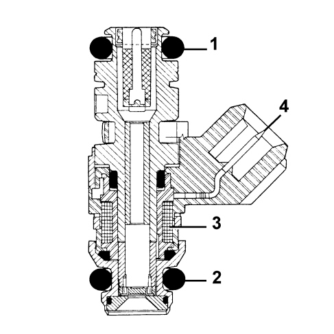
Operation
The jet of fuel comes out of the injector at an absolute pressure of 3.5 bar through the returnless system atomizing immediately.
The injector control logic is the phased sequential type, i.e. the four injectors are operated in accordance with the inlet stages.
FUEL MANIFOLD
Specifications
The fuel manifold is fastened to the inner part of the intake manifold and its function is to send the fuel to the injectors.
In addition to the seats for the injectors there is a rapid connector on the fuel manifold for connection with the fuel supply pipe and a connector for checking the fuel supply pressure.
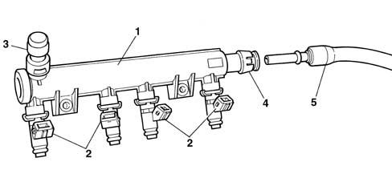
1. Fuel manifold
2. Injector
3. Connector for discharging fuel pressure
4. Rapid connector
5. Fuel supply pipe
ENGINE COOLANT TEMPERATURE SENSOR
Specifications
This is fitted to the thermostat cup and detects coolant temperature by means of an NTC thermistor with negative resistance coefficient.
Electrical properties
°C | Ohms |
|---|---|
- 20 | 15971 |
- 10 | 9620 |
0 | 5975 |
10 | 3816 |
20 | 2502 |
25 | 2044 |
30 | 1679 |
40 | 1152 |
50 | 807 |
60 | 576 |
70 | 418 |
80 | 309 |
90 | 231 |
100 | 176 |
Operation
The reference voltage is 5V for the NTC element for the injection system. Because the control unit input circuit is designed as a voltage divider, this voltage is distributed between a resistance present in the control unit and the sensor NTC resistance.
The control unit is therefore able to assess sensor resistance changes via changes in the voltage and thus obtain temperature information.
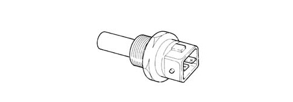
Composition
The composition of the sensor is illustrated in the diagram below.
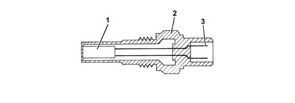
1. NTC resistance
2. Sensor body
3. Electrical connector
DETONATION SENSOR
Specifications
The piezoresistive type detonation sensor is fitted on the crankcase between and measures the intensity of vibrations caused by knock in the combustion chambers.
This phenomenon has mechanical repercussions on a piezoelectric crystal that sends a signal to the control unit which, on the basis of this signal, reduces the ignition advance until the phenomenon disappears. Later on, the advance is gradually restored to the basic value.
Electrical properties:
- resistance: 532 - 588 Ohm at 20 °C.
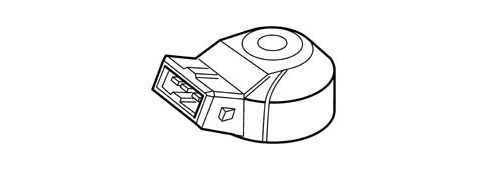
Operation
The molecules of a quartz crystal are electrically polarised.
In rest condition (A), the molecules do not display any particular orientation.
When the crystal is subject to pressure or impact (B), the degree of alignmnent is directly proportional to the pressure acting on the crystal.
This orientation generates a voltage at the crystal terminals.
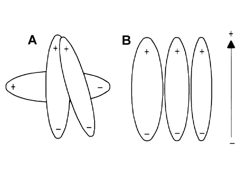
A. Rest position
B. Position under pressure
RPM SENSOR
Specifications
It is fitted on the cylinder block/crankcase facing the flywheel on the crankshaft pulley.
It is inductive type, i.e. its operation is determined by magnetic field changes generated by the teeth passing in front of the phonic wheel (60-2 teeth).
The injection control unit uses the rpm signal for:
- determining the rotation speed;
- determining the angular crankshaft position.
Electrical properties:
- resistance = 1134 - 1386 Ohm at 20 °C.
The recommended distance (gap) between the end of the sensor and the flywheel for obtaining correct signals should be 0.5 - 1.5 mm.
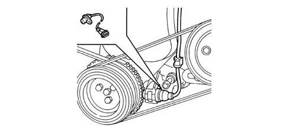
Composition
The sensor takes the form of a tubular case (1) containing a permanent magnet (3) and an electrical winding (2).
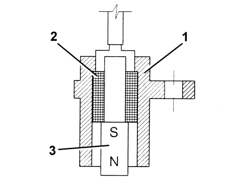
Operation
Due to the passage of the phonic wheel teeth, the magnetic flux set up by magnet (3) undergoes fluctuations due to changes in the gap.
These fluctuations set up an electromotive force in winding (2) and a voltage is set up at the terminals that is alternatively positive (tooth facing sensor) and negative (gap facing sensor).
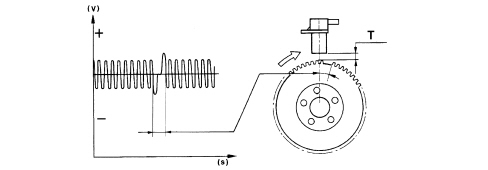
The rpm sensor peak output voltage depends, all else being equal, on the distance between the sensor and the phonic wheel teeth (gap T: 0.5 - 1.5 mm).
There are sixty teeth on the flywheel, with two having been removed to produce a reference: the passing of the wheel therefore corresponds to an angle of 6° (360° divided by 60 teeth).
The synchronism point is recognised at the end of the first tooth following the gap left by the two missing teeth: when this passes beneath the sensor, the crankshaft is located with piston pair 1-4 at 114° before TDC.
ACCELERATOR PEDAL POTENTIOMETER
Specifications
The accelerator pedal is equipped with two built-in potentiometers:
- one main one;
- one safety one.
The injection control unit implements the following recovery strategies in the following conditions:
- if one of the two potentiometers fails, this allows the throttle to be opened to a maximum of 40° over a long time period;
- if both potentiometers fail completely, it prevents throttle opening.
Operation
The sensor consists of a case secured to the accelerator pedal support. This contains an axially-located shaft connected to a dual-track potetiometer.
A coil spring on the shaft ensures the correct amount of resistance to pressure while a second spring ensures return following release.
Operating field from 0° to 70°; mechanical stop at 88°.
THROTTLE BODY
Specifications
It is fitted on the intake manifold and regulates the amount of air taken in by the engine.
According to the signal received from the accelerator pedal potentiometer, the injection control unit controls the throttle opening by means of a direct current motor built into the throttle body.
Throttle opening takes place from 0° to 82°, i.e. including idle speed adjustment range.
The throttle body is equipped with two built-in potentiometers, each of which controls the other.
If there is a fault with the two potentiometers or no power supply, depending on the position of the accelerator pedal, the control unit applies a recovery strategy with the consequent inferior operation noticeable to the driver and the EOBD fault diagnosis is disabled.
The self-learning procedure does not have be carried out if the injection control unit or the intake manifold or the throttle casing is replaced.
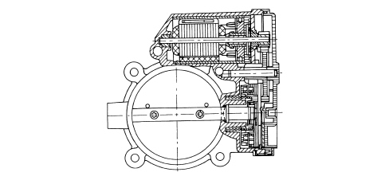
Operation
The opening of the throttle is managed by an electrically operated motor.
The Marelli 5SF3 system operates the motorized throttle according to accelerator pedal requests; a potentiometer is connected to it that sends a voltage signal to the control unit where it is processed and opening laws are produced.
The position of the throttle is controlled by the control unit via a potentiometer incorporated in the throttle casing.
INTAKE AIR TEMPERATURE AND PRESSURE SENSOR
Specifications
The pressure and intake air temperature sensor is an integral component which is designed to measure the pressure and the temperature of the air inside the intake manifold.
Both pieces of information are used by the injection control unit in defining the quantity of air drawn in by the engine and are then used for calculating the injection time and the ignition point. The sensor is fitted on the intake manifold.
Operation
The air temperature sensor consists of an NTC thermistor (Negative Temperature Coefficient).
The sensor resistance decreases as the temperature increases.
The control unit input circuit shares the 5 Volt reference voltage between the sensor resistance and a fixed reference value producing a voltage that is proportional to the resistance and consequently to the temperature.
The sensitive element of the pressure sensor is made up of a Wheatstone bridge serigraphed on a ceramic material diaphragm.
On one side of the diaphragm is the absolute reference vacuum, whilst on the other side is the vacuum from the intake manifold.
The (piezoresistive) signal, coming from the distortion suffered by the diaphragm, before being sent to the engine management control unit, is amplified by an electronic circuit contained in the support that houses the ceramic diaphgram.
With the engine off, the diaphgram deflects according to atmospheric pressure. Exact reference information on altitude can therefore be obtained with the key on.
During operation, the engine generates a vacuum that produces a mechanical action on the sensor ceramic diphragm which bends to alter the resistance value.
Because the power supply from the control unit is maintained strictly constant (5V), the output voltage changes when the resistance value is altered.
Electrical properties
The electrical properties of the sensor are illustrated in the diagram below.
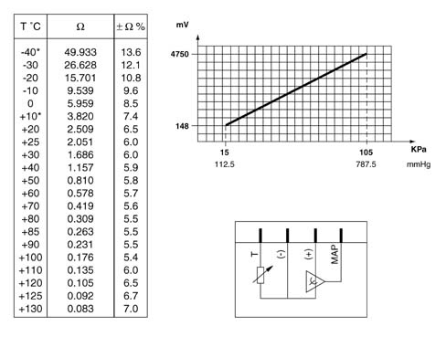
IGNITION COILS
Specifications
The coils are housed in a single casing fastened directly to the tappet cover and are the closed magnetic circuit type. They consist of a lamellar pack with a central silicon steel core broken by a fine gap that holds both the windings.
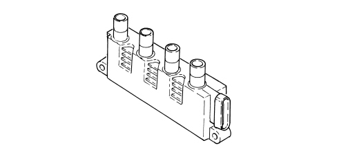
Pin Out
1. V Batt
2. ECU control for spark plug for cylinder 1
3. ECU control for spark plug for cylinder 2
4. ECU control for spark plug for cylinder 3
5. ECU control for spark plug for cylinder 4
6. Earth
Electrical properties:
- Primary circuit resistance: 0.5 Ohm ± 10% at 23 ± 3 °C
- Secondary circuit resistance: 6.0 kOhm ± 10% at 23 ± 3 °C.
The windings are covered by a pressed plastic container and are insulated through immersion in an epoxide resin and quartz compound that gives them excellent dielectric, mechanical and also thermal properties on exposure to high temperatures.
The proximity of the primary winding to the magnetic core reduces the magnetic flux losses ensuring the maximum coupling on the secondary winding.
TIMING SENSOR
Composition
The sensor is the Hall effec type. A current-carrying semiconductor layer immersed in a normal magnetic field generates a potential difference known as a Hall voltage at its terminals.
Operation
The lines of force perpendicular to the direction of the current produce a difference in power at the terminals (known as Hall voltage).
If current intensity remains constant, the generated voltage depends on magnetic field intensity alone. Changes in magnetic field intensity are sufficient to generate a modulated electrical signal with frequency proportional to the speed of magnetic field change.
To produce this change the distance between the sensor and the pulley on the camshaft is varied.
The rotation of the pulley alters the distance and produces a low voltage signal corresponding to each of the references.
Conversely, where the three references are not present, the sensor produces a higher voltage signal.
As a result the high signal alternates with the low signal four times every engine cycle.
Together with the rpm and TDC signal, this signal allows the control unit to identify the cylinders and determine injection and ignition points.
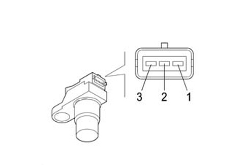
1. Earth
2. Output or signal
3. Supply voltage